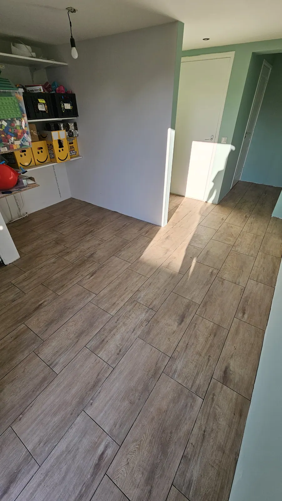

Toilet renovatie in Emmen
Toilet vernieuwen met een hangtoilet, fonteintje en nieuw tegelwerk? Oosterveld verzorgt leidingwerk, elektra, tegelwerk en sanitair in Emmen en omgeving.
Een nieuw toilet, netjes en snel uitgevoerd
Een toilet is een kleine ruimte, maar de afwerking valt op. Bij een toiletrenovatie in Emmen en omgeving regelt Oosterveld alles: van het verwijderen van het oude toilet tot een nieuw hangtoilet, fonteintje en tegelwerk.
- Hangtoilet met inbouwreservoir of een staand toilet
- Fonteintje met kraan
- Nieuw tegelwerk op wand en vloer
- Leidingwerk aanpassen of verleggen
- Elektra: verlichting en afzuiging
- Plafond afwerken met stucwerk of kunststof

Wat kun je kiezen?
Inbouw of opbouw
Een inbouwreservoir in de wand of een opbouwoplossing. Dat bepaalt hoe de wand wordt opgebouwd.
Afzuiging
Een aanwezige afzuiging behouden, vernieuwen of nieuw laten installeren.
Tegelwerk
Grote tegels, een combinatie van twee soorten of alleen de wanden: je kiest, wij werken het netjes af.
Verlichting
Een of meer lichtpunten, spotjes of een LED-lamp: wij leggen de elektra aan.
Zo werken we
Online richtprijs
Je vult je wensen in en krijgt snel een richtprijs.
Opname bij je thuis
Jasper komt langs, meet op en bespreekt de details.
Vaste prijs
Je ontvangt een definitieve offerte om te tekenen.
Uitvoering
We werken netjes en houden je op de hoogte.
Oplevering
We lopen alles samen na en laten alles schoon achter.
Een toilet dat we hebben verbouwd
Een toilet met hangtoilet en fonteintje, plus tegelwerk uit onze badkamer- en vloerprojecten.


Wat klanten zeggen
Reviews van klanten van Oosterveld.
“Vriendelijk man en hij heeft netjes gewerkt. Ook liet hij alles schoon achter.”
Hier komt een echte klantreview over een toilet dat we hebben verbouwd. Vraag tevreden klanten na de oplevering om een Google-review.
“Uitstekend uitgevoerd, netjes achtergelaten, vriendelijk contact.”
Veelgestelde vragen
Hangtoilet of staand toilet?
Een hangtoilet met inbouwreservoir is een populaire keuze: het ziet er strak uit en is gemakkelijk schoon te houden. Een staand toilet kan ook. We bespreken wat past bij je ruimte.
Kan er een fonteintje in een klein toilet?
Ja. In de meeste toiletruimtes past een compacte fontein met kraan. We bekijken de ruimte bij de opname.
Doen jullie ook het tegelwerk en de elektra?
Ja. We verzorgen leidingwerk, tegelwerk, sanitair en de elektra, zoals verlichting en afzuiging.
Hoe lang duurt een toiletrenovatie?
Een toilet is een kleinere klus dan een badkamer. Na je aanvraag en de opname geven we je een concrete planning.
Hoe vraag ik een richtprijs of offerte aan?
Via het formulier op deze site, per WhatsApp of telefonisch. Je krijgt eerst een richtprijs. Daarna komen we bij je langs voor de opname en ontvang je een definitieve prijs.
Klaar voor je richtprijs?
Vul je wensen in en ontvang snel een richtprijs. Daarna komen we langs voor een vaste prijs.